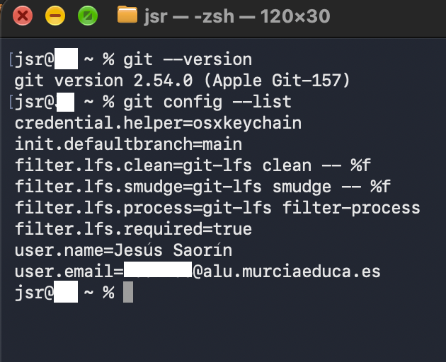
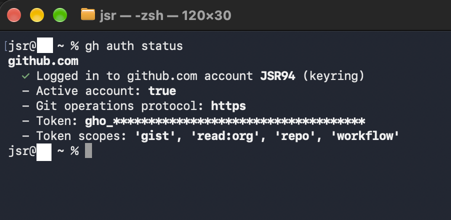
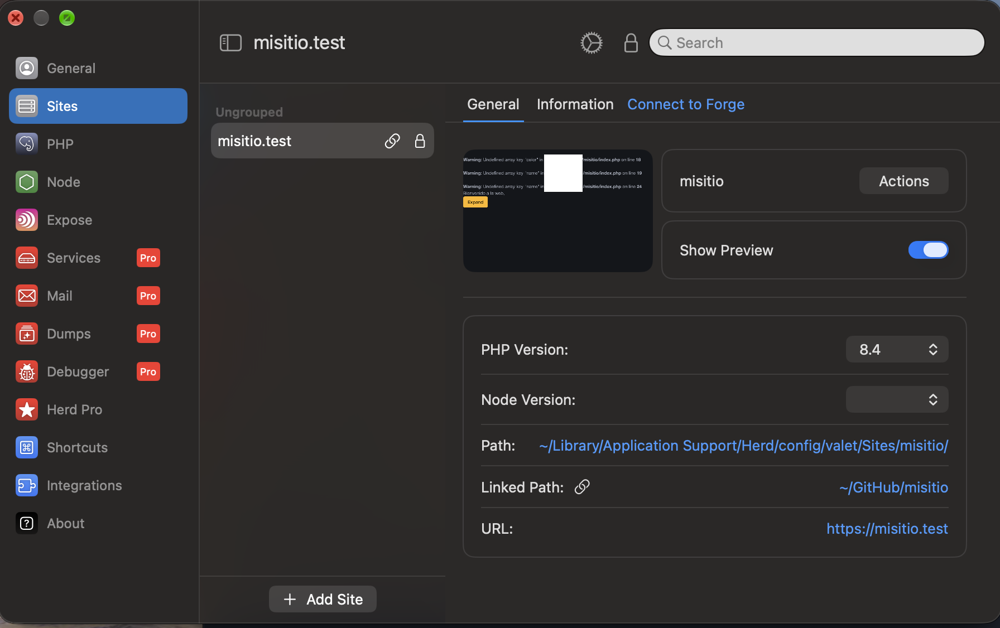
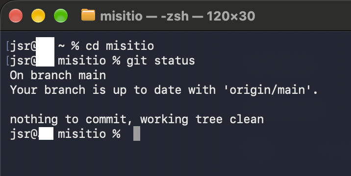
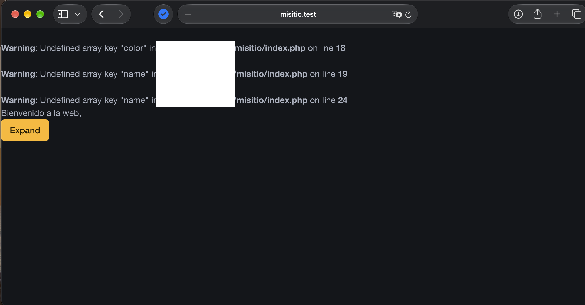
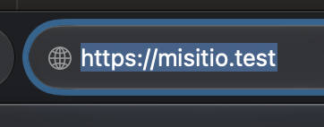

Práctica 01: Documentación de la instalación y configuración
1. Git instalado y configurado en local
En este apartado se muestra que Git está instalado y configurado correctamente en el equipo local.

2. GitHub CLI instalado y configurado
Se comprueba que GitHub CLI está instalado y que la cuenta de GitHub está correctamente autenticada.

3. Herd instalado con PHP 8.4
Se muestra Herd instalado y configurado utilizando PHP 8.4.

4. Repositorio misitio clonado en local
Se muestra el repositorio misitio descargado y disponible en el equipo
local.

5. Herd enlazado al repositorio misitio y servido mediante HTTPS
Finalmente, se muestra que Herd tiene enlazado el repositorio misitio y que
el sitio web está disponible mediante HTTPS.

